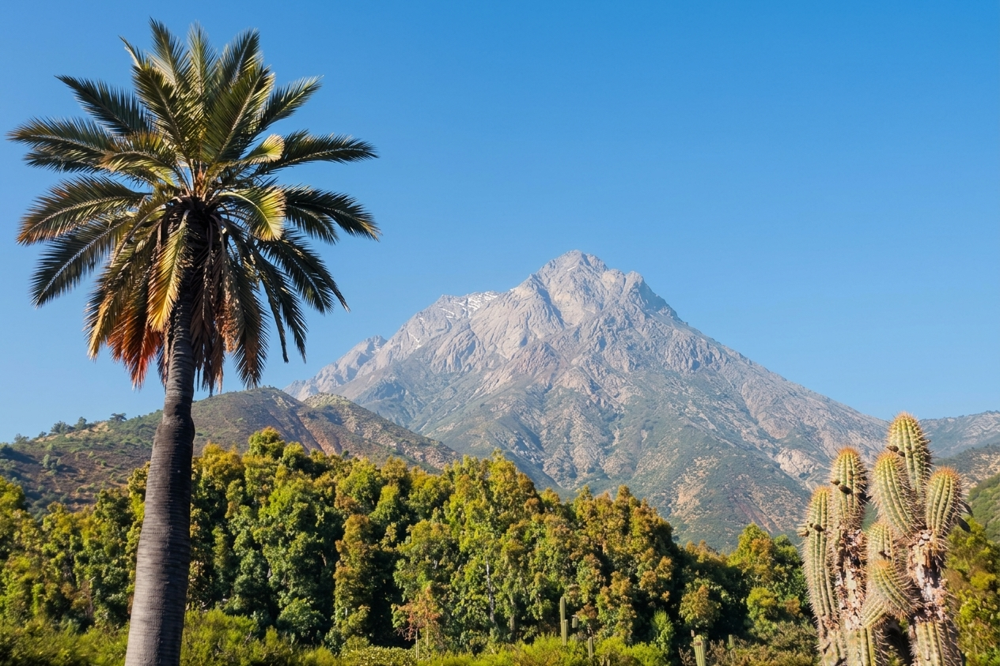
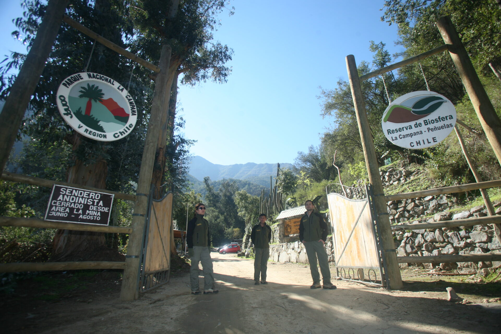
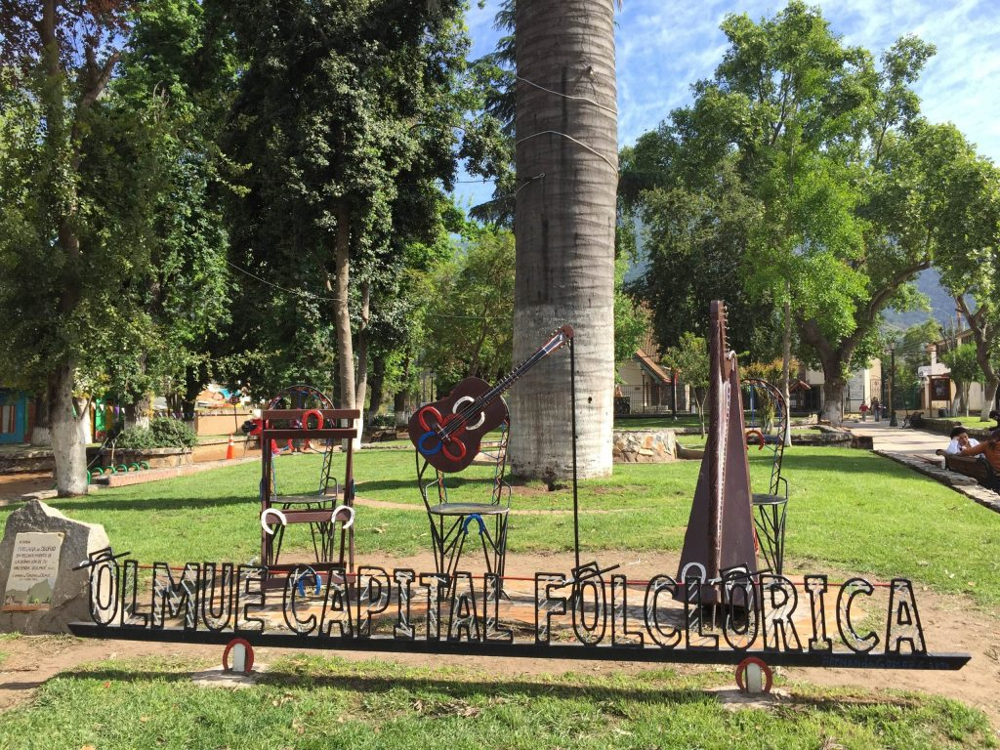

Senderos y paisaje
Camina por rutas habilitadas y elige un recorrido acorde a tu experiencia y condición física.
TURISMO EN OLMUÉ
Descubre Olmué, al pie de La Campana: un encuentro con el paisaje, la cultura huasa y la calidez de nuestra gente.
Planifica tu visitaRegión de Valparaíso · Chile

UN DESTINO PARA CONECTAR
Entre cerros, vida rural y memoria folclórica, Olmué invita a cambiar de ritmo. Conoce sus paisajes y su patrimonio, disfruta los sabores locales y encuentra tu propia forma de recorrer la comuna.

NATURALEZA Y PATRIMONIO
Un referente natural de la zona central de Chile. Sus senderos y bosque nativo invitan a conocer la biodiversidad y a contemplar el paisaje con respeto.
Camina por rutas habilitadas y elige un recorrido acorde a tu experiencia y condición física.
Escucha, observa y fotografía a distancia. La flora y la fauna se disfrutan sin intervenirlas.
Lleva agua, protección solar y calzado adecuado. Revisa el clima y las indicaciones oficiales.
CAPITAL FOLCLÓRICA DE CHILE
La cueca, la música y las tradiciones del campo forman parte de la identidad de Olmué.
En Olmué, el encuentro con el paisaje, los sabores, la identidad, las tradiciones, la artesanía y los senderos se viven de manera natural. Caminar por sus senderos, disfrutar de sus sabores y descubrir la artesanía local es una forma de conectar con la esencia del territorio y con la gente que lo habita. Aquí, cada rincón cuenta una historia y cada tradición se vive con autenticidad.

Descubre los rincones emblemáticos que concentran el paisaje, la identidad, los sabores y la artesanía de la comuna.
Explora los sectores Granizo y Cajón Grande para acercarte al paisaje natural de Olmué. Antes de visitar, consulta los accesos y senderos habilitados.
Un lugar ideal para descubrir gastronomía y artesanía local, acercándote a los sabores y oficios del territorio.
TURISMO RESPONSABLE
No enciendas fuego. Lleva tus residuos de vuelta y no extraigas flora ni alimentes fauna.
Cuida los espacios, respeta la propiedad privada y pide permiso antes de fotografiar personas.
Prefiere productos y servicios de la comuna y valora el trabajo de quienes te reciben.
RESOLVEMOS TUS DUDAS
Información para preparar una visita informada y disfrutar con confianza.
Consulta la sección Contacto del sitio municipal y los canales institucionales vigentes.
Consulta a CONAF las condiciones de ingreso vigentes, el sistema de reservas y los sectores habilitados. No viajes al parque sin confirmar esta información.
No asumas que el recinto está abierto. Consulta a la Municipalidad las condiciones de visita y la programación oficial. Esta página no confirma eventos ni accesos.
Considera edades, movilidad, clima y dificultad del recorrido. Confirma accesibilidad y servicios directamente con la fuente responsable antes de elegir una actividad.
Revisa los canales oficiales de la Municipalidad de Olmué para orientación local y agenda cultural, y los de CONAF para información del parque.